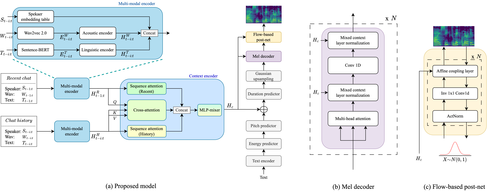

H4C-TTS: Leveraging Multi-Modal Historical Context for Conversational Text-to-Speech
Abstract
Conversational text-to-speech (TTS) aims to synthesize natural voices appropriate to a situation by considering the context of past conversations as well as the current text. However, analyzing and modeling the context of a conversation remains challenging. Most conversational TTS use the content of historical and recent conversations without distinguishing between them and often generate speech that does not fit the situation. Hence, we introduce a novel conversational TTS, H4C-TTS, that leverages multi-modal historical context to realize contextually appropriate natural speech synthesis. To facilitate conversational context modeling, we design a context encoder that incorporates historical and recent contexts and a multi-modal encoder that processes textual and acoustic inputs. Experimental results demonstrate that the proposed model significantly improves the naturalness and quality of speech in conversational contexts compared with existing conversational TTS.
Contents
Model Architecture

Evaluation on different expressive TTS models
- GT: Ground-truth
- Tacotron2
- FastSpeech2
- DailyTalk
- H4C-TTS (Proposed model)
Naturalness
Sample 01
SPK A: No, i don't often dance. Isn't this a wonderful party?
SPK B: Yes, i'm glad i have come.
SPK A: How do you like fox-trot?
SPK B: I like it very much.
SPK A: You dance beautifully.
SPK B: Thank you. It's lucky that i have got a good partner.
| GT (History) |
|---|
| Tacotron2 | Fastspeech2 | DailyTalk | H4C-TTS |
|---|---|---|---|
Sample 02
SPK A: Hey, susie, what health club do you belong to?
SPK B: Total fitness, why?
SPK A: Well, i've been going to athletic express, but i don't like it there.
SPK B: Really? Why not? I hear it's pretty good.
| GT (History) |
|---|
| Tacotron2 | Fastspeech2 | DailyTalk | H4C-TTS |
|---|---|---|---|
Sample 03
SPK A: Well, they have different rooms. I lift weights by the pool where there aren't so many people.
SPK B: Do they have a lot of equipment?
SPK A: Yeah, they have all the machines, a pool, and a steam room and sauna.
SPK B: Sounds nice. What about classes?
SPK A: The usual. aerobics, kickboxing, yoga. They just started a tai chi class too.
SPK B: Wow, that sounds great.
| GT (History) |
|---|
| Tacotron2 | Fastspeech2 | DailyTalk | H4C-TTS |
|---|---|---|---|
Sample 04
SPK A: House keeping. May i come in?
SPK B: Come in please.
SPK A: Good evening, sir. I come to make the bed. Shall i do it now or later?
SPK B: Well, Since you have come, Do it now please?
SPK A: That's all. Have a nice stay here.
SPK B: Thank you. Umm please get some soap for us.
SPK A: Just a moment. I will do it right now.
| GT (History) |
|---|
| Tacotron2 | Fastspeech2 | DailyTalk | H4C-TTS |
|---|---|---|---|